附录1 开发环境搭建
开发环境搭建¶
1. 基于Linux的GPU开发环境¶
在 AI 大模型、高性能计算（HPC）以及深度学习算力底层，Linux（尤其是 Ubuntu）是 GPU/CUDA 开发与生产部署的绝对主导平台。虽然 Windows 也能进行基础的 CUDA 开发，但工业级和科研级 GPU 系统的最佳载体依然是 Linux。
说明：读者在阅读本节之前，需要一定的 Linux 使用经验，比如知道基础的cd、ls和mkdir等命令的用法，知道在命令行用vim、emacs或者nano等文本编辑器修改一个文件。会用apt或者yum安装软件。
不太熟悉Linux的同学请自行上网找相关资料。我这里推荐几个免费的网站：
学习完这些教程后可以去labex.io的Linux免费实验去尝试，这个平台提供免费的实验环境，这样我们不用在本地安装Linux就可以先学习并熟悉Linux。
或者参考我们的方案二，去CloudStudio注册账号，就能很快获得一个云的Linux(Ubuntu)环境。然后去练习，等熟悉了Linux之后再自己安装Linux系统(基于WSL或者直接在计算机上安装)。
1.1 为什么 GPU/CUDA 开发首选 Linux？¶
1.1.1 显存与硬件资源的极致利用¶
- 没有桌面图形渲染开销：在无图形界面（Headless）的 Linux 服务器环境中，GPU 显存可以 100% 留给 CUDA 计算。而在 Windows 系统下，WDDM 驱动（Windows Display Driver Model）和 DWM（桌面窗口管理器）会强制占用数百 MB 到数 GB 的 GPU 显存用于系统 UI 渲染。
- 计算模式性能更高（TCC vs WDDM）：Linux 系统天然将 GPU 置于高效的计算模式下运行。在 Windows 上，消费级显卡（如 RTX 系列）强绑定 WDDM 驱动，存在调度延迟和内核抢占开销，限制了显卡并发计算能力。
1.1.2. 多 GPU 调度与高性能集群通信¶
- 原生支持 Multi-GPU 与 Distributed 训练：Linux 对多卡环境（NCCL、NVLink、NVSwitch、RDMA）的支持最为完备。主流的分布式训练框架（PyTorch Distributed / DDP、Megatron-LM、DeepSpeed）均以 Linux 作为原生开发与测试标准。
- Windows 的多卡限制：Windows 下对于 NCCL（NVIDIA Collective Communications Library）的支持极度受限（如不支持 P2P 内存拷贝或 RDMA 高速网卡传输），几乎无法搭建工业级的多卡/多节点分布式训练集群。
1.1.3. 驱动与底层系统调用的契合¶
- 统一的设备文件接口：Linux 将硬件设备抽象为文件系统（如
/dev/nvidia0,/dev/nvidia-uvm），极大地简化了 Docker 容器化技术（NVIDIA Container Toolkit /nvidia-docker）对 GPU 设备的挂载与隔离。 - 低开销的进程调度与内存管理：CUDA 的 Unified Memory（统一内存）以及异步 CUDA Stream 调度在 Linux 内核（利用异构内存管理 HMM）中的实现效率显著高于 Windows。
1.1.4. 前沿 AI/GPU 工具链生态的天然倾斜¶
- 框架与底层算子开发的首发阵地：包括 OpenAI Triton、FlashAttention、vLLM、TensorRT-LLM 等极度依赖底层 CUDA C++/PTX 优化的高性能算子与推理引擎，官方支持与编译工具链均优先甚至仅支持 Linux 环境。
- 生态依赖集成难度低：CUDA 开发往往伴随着 C++ 编译工具链（GCC/Clang）、CMake、Python C-Extensions 等。Linux 的 Shell 命令行与包管理生态能极大简化复杂 CUDA 项目的依赖编译过程。
1.2 为什么在众多 Linux 发行版中选择 Ubuntu？¶
在诸多 Linux 发行版（如 CentOS/RHEL、Debian、Arch Linux 等）中，Ubuntu（尤其是 LTS 长期支持版，如 22.04 LTS / 24.04 LTS） 成为了 GPU 开发的标准选择：
1.2.1. NVIDIA 官方优先级最高的支持¶
NVIDIA 官方在发布全新的驱动、CUDA Toolkit、TensorRT 以及相关开发工具（如 Nsight Systems, NCU）时，Ubuntu 永远是第一优先级适配和测试的目标平台。NVIDIA 为 Ubuntu 提供了维护最完备的 Apt 软件源，只需简单命令即可安装驱动与 CUDA 环境。
1.2.2. 最繁荣的 AI 与 CUDA 开源社区生态¶
- 社区踩坑少，解法统一：无论是 Hugging Face、PyTorch、TensorFlow，还是各种 CUDA 开源开源项目，Docker 基础镜像（如
nvidia/cuda:12.x.x-devel-ubuntu22.04）基本全线采用 Ubuntu 作为底层环境。 - 错误解决成本低：遇到 CUDA 版本冲突、驱动报错或依赖问题时，在互联网上针对 Ubuntu 平台的解决方案最丰富、最健全。
1.2.3. 完善的 PPA 与工具链维护¶
Ubuntu 拥有极其庞大的软件生态体系（PPA 丰富），对于现代 CUDA 开发所需的工具链（如新版 GCC/G++、Clang、Python、CMake、Git、uv 等）能够快速方便地进行安装与版本切换，显著降低了环境搭理和维护的开销。
1.3 总结¶
| 维度 | Linux (Ubuntu) | Windows |
|---|---|---|
| GPU 显存利用 | 零 UI 占用（Headless），全量显存供 CUDA 计算 | 被桌面 UI (DWM) 强制占用部分显存 |
| 多卡与分布式 | 原生支持 NCCL、NVLink、RDMA、Multi-GPU | 多卡通信支持差，不支持高性能集群 |
| 容器化与部署 | 支持 Docker/K8s 极简挂载 GPU (nvidia-docker) |
容器支持相对繁琐且存在层层转换损耗 |
| 前沿算子生态 | FlashAttention / Triton / vLLM 原生首发支持 | 很多底层算子与库需要极其复杂的交叉编译或不支持 |
| 生态成熟度 | NVIDIA 官方首选平台，Docker 镜像标准 | 适合个人桌面轻度学习，不适合生产部署 |
因此，基于 Ubuntu 搭建 GPU/CUDA 开发环境，能够最小化环境磨损，最大化算力硬件性能，并且与当前业界最先进的 AI 基础设施与工程生态保持无缝兼容。
那怎么基于 Ubuntu 搭建一个实际的开发环境呢？下面给出两种方案，同学们可以根据自己的情况选择。当然还有很多其它方案，比如直接在自己的台式机/笔记本按照Ubuntu。本课程不介绍怎么安装Ubuntu或者双系统，感兴趣的同学可以自行搜索安装方法。
1. 方案一：基于WSL的GPU开发环境¶
假设我们有一台计算机，安装的系统是Windows，并且有显卡，那么我们可以采用这种方案。说明：这里假设读者会在Windows下使用简单的命令行工具，在powershell下执行简单命令。
1.1 WSL是什么¶
WSL (Windows Subsystem for Linux，Windows系统的Linux子系统) 让开发者能够在不借助虚拟机、不折腾双系统的前提下，原生运行 Linux 环境。它的核心初衷是打破系统藩篱，为需要同时驾驭 Windows 办公生态与 Linux 开发工具链的工程师，提供一种无缝切换、高效生产的终极方案。
WSL到目前为止主流有两个版本，分别是WSL1和WSL2。(2026年9月推出了WSL3.0)。WSL1和WSL2的功能对比如下：
| 功能 | WSL 1 | WSL 2 |
|---|---|---|
| Windows 与 Linux 之间的集成 | ✅ | ✅ |
| 快速启动时间 | ✅ | ✅ |
| 与传统虚拟机相比，资源占用量小 | ✅ | ✅ |
| 兼容当前版本的 VMware 和 VirtualBox | ✅ | ❌ |
| 托管虚拟机 (Managed VM) | ❌ | ✅ |
| 完整 Linux 内核 | ❌ | ✅ |
| 完整系统调用兼容性 | ❌ | ✅ |
| 跨操作系统文件系统的性能 | ✅ | ❌ |
| systemd 支持 | ❌ | ✅ |
| IPv6 支持 | ✅ | ✅ |
正如从上述对比表中所见，WSL 2 的架构在多个方面都优于 WSL 1。而且最最关键的一点是：WSL 1不支持GPU，因为我们的目标就是GPU开发环境，所以我们必须使用WSL 2。
1.2 WSL2的安装¶
WSL 2 仅支持 Windows 11 或 Windows 10 版本 1903（内部版本 18362）及更高版本。您可以通过按下 Windows 徽标键 + R，输入 winver 并点击 确定 来检查您的 Windows 版本（或者在 Windows 命令提示符中输入 ver 命令）。您可能需要更新至最新的 Windows 版本。对于低于 14393 的内部版本，完全不支持 WSL。
1.2.1 BIOS设置¶
WSL 1 是纯软件模拟，不依赖硬件虚拟化，直接安装即可。但WSL 2 基于 Hyper-V 虚拟化技术，需要 CPU 支持并开启虚拟化功能。
在 BIOS 中，你需要找到并开启 CPU 虚拟化 选项。不同主板厂商的叫法略有不同，常见名称包括：
- Intel CPU：Intel Virtualization Technology (Intel VT-x) 或 Intel VT-d
- AMD CPU：SVM Mode 或 AMD-V
操作步骤：
- 进入 BIOS：重启电脑，在开机自检画面按特定键（通常是 F2、Del、F12 或 Esc，具体看屏幕提示）。
- 寻找选项：在 BIOS 设置中，通常在 Advanced (高级) 或 CPU Configuration (CPU 配置) 菜单下。
- 开启设置：找到上述虚拟化选项，将其设置为 Enabled (启用)。
- 保存退出：按 F10 保存设置并重启电脑。
1.2.2 常规安装¶
本节的安装方法要求操作系统是Windows 10 version 2004或更高版本(内部版本 19041)或者Windows 11，如果您的系统Windows 10小于19041(但是大于18362)，那么需要参考下面的手动安装。
使用管理员身份启动Powershell或者cmd，然后执行：
wsl --install -d Ubuntu-24.04
上面的命令默认从微软应用商店(Microsoft Store)下载WSL，如果下载不了，可以从官网下载：
wsl --install --web-download -d Ubuntu-24.04
为了检查是否安装成功，我们在powershell里执行如下命令：
PS C:\Users\lili> wsl -l -v
NAME STATE VERSION
* Ubuntu Running 2
1.2.3 手动安装¶
1.2.3.1. 开启WSL子系统¶
以管理员身份运行powershell，执行：
dism.exe /online /enable-feature /featurename:Microsoft-Windows-Subsystem-Linux /all /norestart
1.2.3.2. 开启虚拟机功能¶
dism.exe /online /enable-feature /featurename:VirtualMachinePlatform /all /norestart
1.2.3.3. 下载安装Linux kernel更新包¶
点击这里下载并安装。
1.2.3.4. 设置wsl2为默认版本¶
在powershell里执行：
wsl --set-default-version 2
1.2.3.5. 下载ubuntu并安装¶
进入这里，下载Ubuntu 24.04.1 LTS Installer并安装。
1.2.3.6 设置用户名和密码¶
在安装的过程中，系统会提示输入用户名和密码，如下图所示：
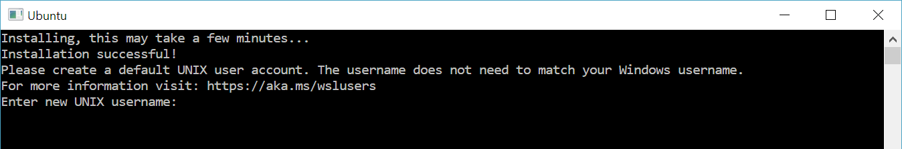
请记住这个账号的用户名和密码，这个账号是有sudo权限的。如果忘记密码，可以用如下命令以root登陆，然后修改密码：
wsl -u root
注意：在Linux系统里，绝对不要用root账号登陆，很多系统会禁止root登陆。如果需要执行特权指令，可以使用sudo cmd，或者用sudo su root短暂的切换到root，执行完特权指令后马上用exit返回普通账号。
1.3 安装/更新Nvidia驱动程序¶
在powershell/cmd里执行命令查看当前驱动版本：
nvidia-smi.exe
PS C:\Users\lili> nvidia-smi.exe
Mon Mar 2 17:10:01 2026
+-----------------------------------------------------------------------------------------+
| NVIDIA-SMI 591.86 Driver Version: 591.86 CUDA Version: 13.1 |
+-----------------------------------------+------------------------+----------------------+
| GPU Name Driver-Model | Bus-Id Disp.A | Volatile Uncorr. ECC |
| Fan Temp Perf Pwr:Usage/Cap | Memory-Usage | GPU-Util Compute M. |
| | | MIG M. |
|=========================================+========================+======================|
| 0 NVIDIA GeForce RTX 4090 ... WDDM | 00000000:01:00.0 Off | N/A |
| N/A 40C P3 19W / 109W | 0MiB / 16376MiB | 1% Default |
| | | N/A |
+-----------------------------------------+------------------------+----------------------+
我们的代码(主要是Pytorch)需要CUDA12.6，如果显示CUDA Version小于12.6，那么说明驱动版本太老，无法支持CUDA12.6，需要升级驱动。对于Windows系统来说，我们一般很可能购买的是GeForce系列的消费级显卡，那么可以通过Nvidia App通过Game Ready安装升级驱动。也可以在这里自己根据操作系统、显卡手动搜索驱动：
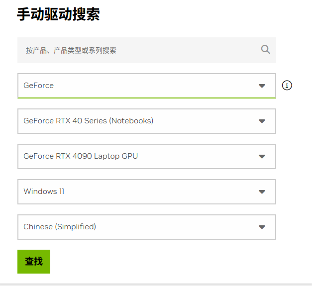
这里要注意：如果我们是笔记本，那么要选择(Notebook)的，比如我这里的GeForce RTX 40 Series(Notebook)。
安装/升级Nvidia驱动之后需要重启计算机。
1.4 Windows休眠设置(可选)¶
我们在跑模型训练通常需要很长时间，但是Windows本身定位是个人使用，一旦锁屏之后就会进入休眠或者睡眠状态，因此我们需要进行设置。
打开控制面板 -> 硬件和声音
1.4.1 更改计算机睡眠时间¶
接通电源时选择“从不”睡眠。
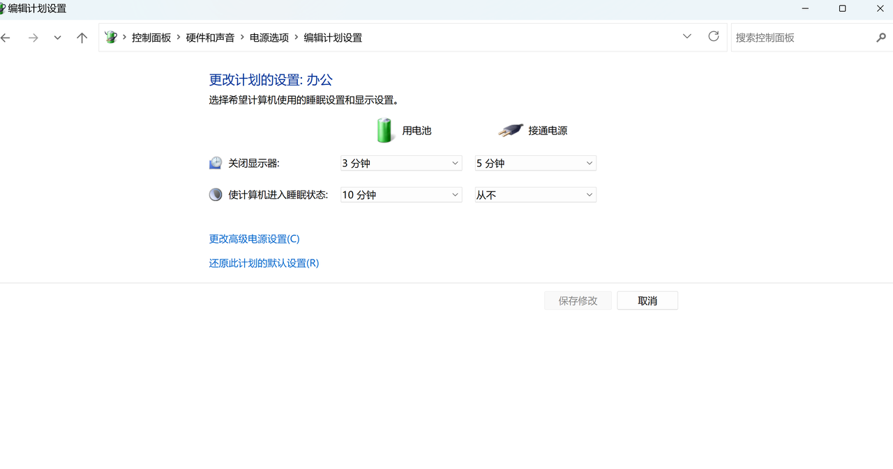
1.4.2 更改电源按钮的功能¶
接通电源时，不采取任何操作。
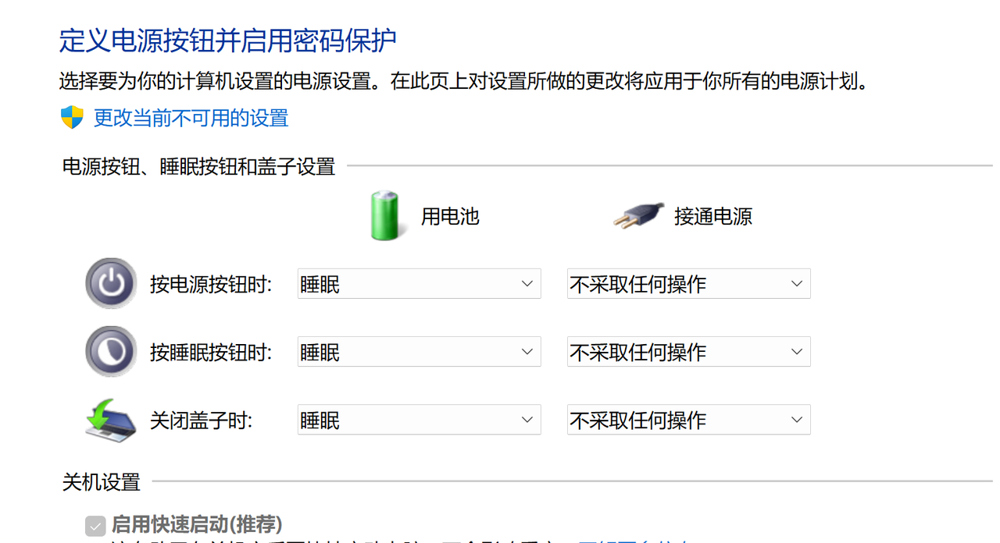
1.4.3 选择电源计划¶
选择一个默认的计划，这里是“办公”。
然后点击更改计划设置，进入下一步。
1.4.4 更改计划的设置：办公¶
进入之后，我们看到接通电源，”从不“使计算机进入睡眠状态。接着点击”更改高级电源设置“。在弹出的“高级设置”里，硬盘在接通电源后从不关闭。输入0就代表从不关闭。
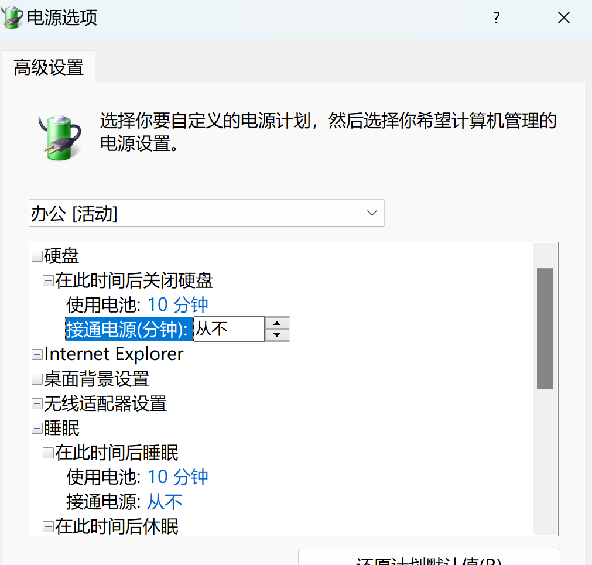
接着在睡眠里，也设置接通电源后从不睡眠和从不休眠。
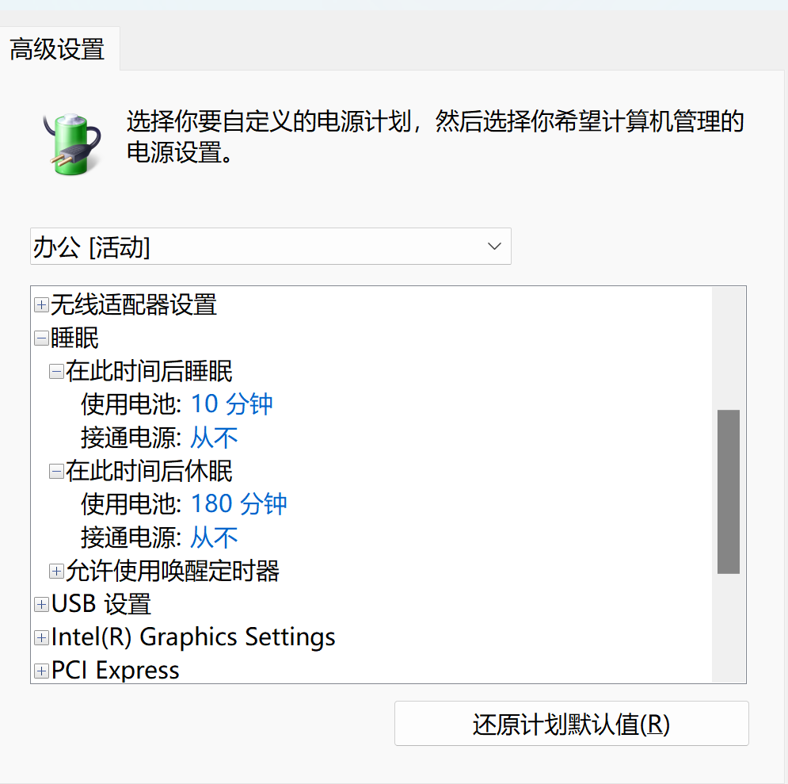
关于睡眠和休眠的区别：
- 睡眠 (Sleep / Suspend-to-RAM)
- 工作原理： 电脑会关闭显示器、硬盘、风扇等大部分耗电组件。但是，它会持续为 内存 (RAM) 供电。因为您的所有工作状态和打开的程序都存储在内存中，只要内存有电，数据就不会丢失。
- 优点： 唤醒速度极快，可以瞬间回到工作状态。
- 缺点： 仍然消耗少量电量。如果笔记本电脑的电池完全耗尽，或者台式机突然停电，所有未保存的工作将丢失。
- 休眠 (Hibernate / Suspend-to-Disk)
- 工作原理： 电脑将内存中所有的数据和系统状态完整复制到一个巨大的隐藏文件（通常名为hiberfil.sys）中，然后彻底断电（与关机无异）。
- 优点： 零功耗。您可以完全移除电池或拔掉电源插头，您的工作状态仍然安全地保存在硬盘上。
- 缺点： 唤醒时，系统需要重新从硬盘将 hiberfil.sys 文件中的数据加载回内存，因此唤醒速度比睡眠慢很多。同时，这个休眠文件会占用与内存大小接近的硬盘空间。
1.5 WSL启动Ubuntu¶
到现在为止，我们已经在WSL里安装好了一个Ubuntu系统，理论上我们就可以在powershell输入：
PS C:\Users\lili> wsl -l -v
NAME STATE VERSION
* Ubuntu Running 2
这表明Ubuntu已经在运行了，我们可以直接输入wsl进入系统：
wsl
lili@itcast:/mnt/c/Users/lili$
现在我们就已经在Linux环境里了，我们可以用lsb_release -a查看具体的版本：
lili@itcast:/mnt/c/Users/lili$ lsb_release -a
No LSB modules are available.
Distributor ID: Ubuntu
Description: Ubuntu 24.04.3 LTS
Release: 24.04
Codename: noble
默认登陆后进入的是Windows的家目录"C:\Users\lili"，这个目录其实是Windows的目录，挂载到Linux的/mnt/c/Users/lili。这个目录是“共享的”，即它可以在Linux下读写，也可以在Windows下读写。这样你可以在Windows下修改代码，然后去Linux下编译执行。
我们初学的时候可以用这种方式，但是在真实的工作开发环境里，Linux通常是安装在远程的服务器上，所以我们需要用ssh命令行登陆Linux。
1.5 ssh登陆Ubuntu¶
在实际场景，由于个人计算机通常没有GPU或者配置较低，AI开发者通常是通过ssh登陆到开发服务器进行开发。所以我们需要把WSL里的Ubuntu当成一台远程的服务器，然后在windows里通过ssh登陆。
1.5.1 安装openssh-server¶
通过wsl进入Ubuntu，然后执行：
sudo apt update
sudo apt install openssh-server
启动sshd，并设置为开机启动：
sudo systemctl enable ssh
sudo service ssh start
1.5.2 windows客户端设置¶
新版的powershell自带ssh客户端，我们可以直接使用。如果是非常老的windows10可能没有，那么可以安装putty等其它ssh客户端。不过我不建议使用图形界面的工具，因为用起来不方便(纯粹个人观点)。
ssh lili@localhost
然后输入密码就可以登陆。但是每次登陆都要输入密码太费劲， 我们可以利用SSH密钥对实现“免密登录”。它的基本原理就是非对称加密，对其原理感兴趣的同学可以自行网络搜索。我这里只介绍怎么操作。
PS> ssh-keygen -t rsa -b 4096
C:\Users\lili\.ssh下会生成两个文件：id_rsa和id_rsa.pub。id_rsa是私钥，永远不要给任何人看。然后id_rsa.pub是公钥，我们需要复制它的内容(给任何人看到都没有关系)。
PS C:\Users\lili\.ssh> cat .\id_rsa.pub
ssh-rsa AAAAB3NzaC1yc2EAAAADAQABAAACAQCx3uPyr/0QtkSdc+h5WTxfNp3C5twlDXN8G9/KGUL7JbmeGutq9CMhqcgWyONyIARKMb5kel23Vcwsvn2h1lLdJ+mzHfhEXpS9mxKec1f9BDSFx9f646Gshor4T2FVJu3tXGxnKWKWbgkbD+IpW24gUjv8LqGgYrwcGVteJytBZGDAvMXu4rPJTKBaxMgILSp19kw3kMrQdrhdibPXuQ8n8G/vXH9S51t+RuADnUkOig0uCJepV7GKOif0QET24iN8Nr46uy8HoA94TXIaFtINswiNEVxF9Z/BHA41xitBIbS8ibMm15e+Tur3TL1gvCqeOr1vVqIr204E+e8Ub2dKCkELhi/kfHrZm5sY39tYhtgBldMLQbCjqZq3GBZQiyYhE7X++Jnvk3dRcWd+VsQXfbkimzFmWs3t9SMxXPoukIjFI1ZXz0yDeNeA6Yv96MY05KrpTe/EVpnVqNvGX0GH6/brqrfGqCTBNeZbuWBYFWEPPkoPE0pJxJcYnWFZYhYaTldJZDeroOxjAdRSlGuxQFFv5tVzZAahu3D9TkmyM/Tv5Cn0SjH6cn7pLAhYLJbx3E9vRM8hSNG44ufcNQLQzSNwbIYl8QK/Ow34yKqBKmTjOBx1FAeJLgu2CPlNMPnoWz8FNyMJZUlJ08ndr0re0u2jhLxFDHiHWBadX7HoSw== lili@itcast
上面是我的公钥，你需要复制自己的。
开启ssh-agent
在 Powershell 下执行：
Get-Service ssh-agent | Set-Service -StartupType Automatic
Start-Service ssh-agent
ssh-add $env:USERPROFILE\.ssh\id_rsa
把公钥复制到Ubuntu
在 Powershell 下执行：
cat $env:USERPROFILE\.ssh\id_rsa.pub | wsl -d Ubuntu bash -c "mkdir -p ~/.ssh && cat >> ~/.ssh/authorized_keys && chmod 700 ~/.ssh && chmod 600 ~/.ssh/authorized_keys"
现在再测试一下。在 Powershell 下执行：
ssh user@localhost
如果一切正常，不需要输入密码就直接登陆Ubuntu。
1.5.3 ssh客户端配置¶
如果windows的用户名和Ubuntu不同，每次都得输入，很费劲，另外如果不想输入localhost，我们也可以给它换个名字。我们需要在C:\Users\lili\.ssh下创建一个名字叫config的文件，然后输入：
Host myserver
HostName localhost
User lili
Port 22
这样我们在ssh myserver的时候它就会连接localhost的22端口，并且以lili为默认用户名登陆，它等价于：
ssh -p 22 lili@localhost
1.5.4 在windows里设置端口转发(可选)¶
说明：如果只是从本机的windows通过ssh登陆Ubuntu，不需要设置端口转发。如果需要通过其它机器登陆WSL里的Ubuntu，才需要下面的设置。
如果我们想把这台Windows当成服务器，让局域网其它的机器也可以ssh到wsl里的ubuntu，我们需要设置端口转发。wsl一般使用的是NAT，也就是可以把Ubuntu看成一台独立的机器。我们也可以开启镜像模式，这样WSL 会直接共享 Windows 的网络接口和 IP 地址。不过这需要windows11或者较新版本的windows10，感兴趣的同学可以上网搜索。这里为了让所有版本都可以用，我们使用默认的NAT。
在NAT模式下，Ubuntu和windows在一个虚拟的局域网里。我首先需要获得它的内网ip，我们在ubuntu(WSL)里执行：
$ ip addr show eth0 | grep -oP 'inet\s\K[\d.]+'
172.24.21.111
请记住这个ip，我们后面会用到。再看一下windows的网络，在 Powershell 下执行：
ipconfig
以太网适配器 以太网:
连接特定的 DNS 后缀 . . . . . . . :
本地链接 IPv6 地址. . . . . . . . : fe80::adce:ce10:c0a:49f6%4
IPv4 地址 . . . . . . . . . . . . : 172.16.20.21
子网掩码 . . . . . . . . . . . . : 255.255.192.0
默认网关. . . . . . . . . . . . . : 172.16.0.1
以太网适配器 vEthernet (WSL (Hyper-V firewall)):
连接特定的 DNS 后缀 . . . . . . . :
本地链接 IPv6 地址. . . . . . . . : fe80::c6f5:336e:ca99:dc56%35
IPv4 地址 . . . . . . . . . . . . : 172.24.16.1
子网掩码 . . . . . . . . . . . . : 255.255.240.0
默认网关. . . . . . . . . . . . . :
可以看到，windows的ip是172.16.20.21，这是它真正的网卡对应的ip。通过虚拟的vEthernet，它又有一个ip是172.24.16.1。而Ubuntu的ip是172.24.21.111。所以Ubuntu的上网路由是：
172.24.21.111 -> 172.24.16.1 -> 172.16.20.21 -> 外网
因此windows相当于一个路由器，Ubuntu的网络请求通过这个路由器才能到外网。
下面是设置端口转发，把对windows的22端口的请求转发到172.24.21.111的22端口，在 Powershell 下执行：
netsh interface portproxy add v4tov4 listenport=22 listenaddress=0.0.0.0 connectport=22 connectaddress=172.24.21.111
验证一下：
> netsh interface portproxy show all
侦听 ipv4: 连接到 ipv4:
地址 端口 地址 端口
--------------- ---------- --------------- ----------
0.0.0.0 22 172.24.21.111 22
现在windows在22端口收到的请求就会转发给wsl的22端口了，但是默认防火墙会禁止inbound的所有请求，所以我们需要把windows的22端口打开。在 Powershell 下执行：
New-NetFirewallRule -DisplayName "WSL SSH" -Direction Inbound -Protocol TCP -LocalPort 22 -Action Allow -Profile Any
检查一下：
Get-NetFirewallPortFilter | Where-Object {$_.Protocol -eq "TCP" -and $_.LocalPort -eq 22} | Get-NetFirewallRule | Format-Table DisplayName, Direction, Action, Enabled, Profile -AutoSize
DisplayName Direction Action Enabled Profile
----------- --------- ------ ------- -------
WSL SSH Inbound Allow True Any
测试，在局域网另外一台机器测试：ssh user@windows机器在局域网的ip地址
1.6 在Ubuntu安装CUDA¶
首先安装build-essential:
sudo apt update
sudo apt install build-essential
下载cuda12.6.2：
wget https://developer.download.nvidia.com/compute/cuda/12.6.2/local_installers/cuda_12.6.2_560.35.03_linux.run
如果下载太慢或者其它网络问题，老师发布的课程资料目录下的software里也有，如果你存放在windows下(比如d盘)，可以直接通过/mnt/c/复制到Ubuntu下。
安装：
sudo sh cuda_12.6.2_560.35.03_linux.run
安装的时候会出现EULA的协议，用PageDown一直下翻到最后，然后输入accept继续。
CUDA Installer │
│ + [X] CUDA Toolkit 12.6 │
│ [X] CUDA Demo Suite 12.6 │
│ [X] CUDA Documentation 12.6 │
│ - [ ] Kernel Objects │
│ [ ] nvidia-fs │
│ Options │
│ Install
选择安装CUDA Toolkit 12.6，也就是前面出现[X]，然后移动光标到Install，回车后安装。说明：因为我们是在WSL下，所以不需要在Ubuntu里安装Nvidia Driver。前面我们在Windows里安装好了Nvidia Driver，Ubuntu直接使用这个Driver。如果是在CloudStudio等环境，也不要安装驱动，因为这些环境其实也是在docker下。如果系统的版本太低，只能联系客服让技术人员帮你升级驱动。只有自己的机器或者裸金属服务器可以升级，但是如果目前的驱动以及能够支持CUDA12.6，就没有必要升级了。
安装完成我们可以验证一下：
$ nvcc --version
nvcc: NVIDIA (R) Cuda compiler driver
Copyright (c) 2005-2024 NVIDIA Corporation
Built on Fri_Jun_14_16:34:21_PDT_2024
Cuda compilation tools, release 12.6, V12.6.20
Build cuda_12.6.r12.6/compiler.34431801_0
顺便检查一下在Ubuntu下的Nvidia Driver是正常的：
$ nvidia-smi
Tue Mar 3 09:54:11 2026
+-----------------------------------------------------------------------------------------+
| NVIDIA-SMI 590.57 Driver Version: 591.86 CUDA Version: 13.1 |
+-----------------------------------------+------------------------+----------------------+
| GPU Name Persistence-M | Bus-Id Disp.A | Volatile Uncorr. ECC |
| Fan Temp Perf Pwr:Usage/Cap | Memory-Usage | GPU-Util Compute M. |
| | | MIG M. |
|=========================================+========================+======================|
| 0 NVIDIA GeForce RTX 4090 ... On | 00000000:01:00.0 Off | N/A |
| N/A 39C P3 23W / 105W | 0MiB / 16376MiB | 1% Default |
| | | N/A |
+-----------------------------------------+------------------------+----------------------+
+-----------------------------------------------------------------------------------------+
| Processes: |
| GPU GI CI PID Type Process name GPU Memory |
| ID ID Usage |
|=========================================================================================|
| No running processes found |
+-----------------------------------------------------------------------------------------+
1.7 磁盘挂载的权限(可选)¶
windows的c盘和d盘被挂载到/mnt/c和/mnt/d，但是默认是挂载到root账号的。我们通常希望挂载到一个普通用户(可能有sudo权限)下。
查看当前用户的UID和GID
# 获取当前用户的 UID
MY_UID=$(id -u)
# 获取当前用户的 GID
MY_GID=$(id -g)
echo "您的 UID 是: $MY_UID"
echo "您的 GID 是: $MY_GID"
UID和GID通常是1000。但如果是其它值也没关系，记住它，后面会用到。编辑wsl.conf文件，不会vim的同学可以用你熟悉的任何文本编辑器。
sudo vi /etc/wsl.conf
把它的内容修改为：
[boot]
systemd=true
[user]
default=lili
[automount]
enabled = true
options = "metadata,uid=1000,gid=1000,umask=0022,fmask=0111,noatime"
mountFsTab = true
注意：lili需要改成你的Ubuntu的账号。为了让设置生效，我们回到Powershell重启wsl：
wsl --shutdown
wsl
1.8 把WSL从C盘迁移到D盘(可选)¶
说明：C盘剩余空间足够(>=256GB)的同学可以不做。如果C盘空间不够，建议把WSL迁移到D盘或者其它盘。
我们首先查看WSL的注册名字，在 Powershell 下执行：
PS C:\Users\lili> wsl -l -v
NAME STATE VERSION
* Ubuntu Running 2
这里显示名字是Ubuntu，如果是别的名字请在下面的命令记得替换。
1.8.1 关闭Ubuntu¶
在 Powershell 下执行：
wsl --shutdown
1.8.2 导出Ubuntu¶
在 Powershell 下执行：
mkdir D:\WSL_Data
wsl --export Ubuntu D:\WSL_Data\ubuntu_backup.tar
1.8.3 卸载Ubuntu¶
在 Powershell 下执行：
wsl --unregister Ubuntu
1.8.4 重新导入¶
在 Powershell 下执行：
mkdir D:\WSL_Ubuntu
wsl --import Ubuntu D:\WSL_Ubuntu D:\WSL_Data\ubuntu_backup.tar
1.8.5 设置默认用户¶
重新导入后默认用户又变成root，我们再次设置，在 Powershell 下执行：
ubuntu config --default-user lili
1.8.7 删除临时文件¶
请在测试wsl并且确保一切正常后删除导出文件D:\WSL_Data\ubuntu_backup.tar。
1.9 设置Ubuntu的内存等资源(可选)¶
由于Ubuntu和Windows共享系统的资源，我们需要做一些限制，避免Ubuntu占用过多资源(尤其是内存)。我这里限制内存最大为16GB。
在 Powershell 下执行：
$configContent = @"
[wsl2]
memory=16GB
swap=4GB
"@
$configContent | Out-File -FilePath "$HOME\.wslconfig" -Encoding ascii
我们查看确认一下，在 Powershell 下执行：
PS C:\Users\lili> cat .\.wslconfig
结果显示：
[wsl2]
memory=16GB
swap=4GB
然后重启wsl使它生效。
2. 方案二：基于Cloud Studio的云环境¶
如果同学们的机器没有GPU，或者安装WSL2出现问题，那么可以使用Cloud Studio的云服务。当然也可以使用阿里云或者其它有GPU的云平台，我这里选用Cloud Studio是因为它有免费的GPU机时。
2.1 注册并绑定账号¶
去https://cloudstudio.net注册。绑定腾讯云账号，获得50小时免费机时。另外每天去打卡也能获得2小时免费机时。
2.2 创建应用¶
选择Ubuntu，切换到gpu，前期的实验用T4或者V100即可。如果要安装FlashAttention，则要求A100或者A10的显卡。
2.3 在Ubuntu安装CUDA¶
首先安装build-essential:
apt update
apt install build-essential
下载cuda12.6.2：
wget https://developer.download.nvidia.com/compute/cuda/12.6.2/local_installers/cuda_12.6.2_560.35.03_linux.run
如果下载太慢或者其它网络问题，老师发布的课程资料目录下的software里也有，如果你存放在windows下(比如d盘)，可以直接通过/mnt/c/复制到Ubuntu下。
安装：
sh cuda_12.6.2_560.35.03_linux.run
安装的时候会出现EULA的协议，用PageDown一直下翻到最后，然后输入accept继续。
| CUDA Installer │
│ + [X] CUDA Toolkit 12.6 │
│ [X] CUDA Demo Suite 12.6 │
│ [X] CUDA Documentation 12.6 │
│ - [ ] Kernel Objects │
│ [ ] nvidia-fs │
│ Options │
│ Install
选择安装CUDA Toolkit 12.6，也就是前面出现[X]，然后移动光标到Install，回车后安装。在CloudStudio等环境，不要安装驱动，因为这些环境其实也是在docker下。如果系统的版本太低，只能联系客服让技术人员帮你升级驱动。只有自己的物理机器或者裸金属服务器可以升级，但是如果目前的驱动以及能够支持CUDA12.6，就没有必要升级了。
安装完成我们可以验证一下：
➜ /workspace git:(master) ✗ nvcc --version
nvcc: NVIDIA (R) Cuda compiler driver
Copyright (c) 2005-2023 NVIDIA Corporation
Built on Tue_Aug_15_22:02:13_PDT_2023
Cuda compilation tools, release 12.2, V12.2.140
Build cuda_12.2.r12.2/compiler.33191640_0
顺便检查一下在Ubuntu下的Nvidia Driver是正常的：
➜ /workspace git:(master) ✗ nvidia-smi
Tue Oct 6 02:48:25 2026
+-----------------------------------------------------------------------------------------+
| NVIDIA-SMI 580.65.06 Driver Version: 580.65.06 CUDA Version: 13.0 |
+-----------------------------------------+------------------------+----------------------+
| GPU Name Persistence-M | Bus-Id Disp.A | Volatile Uncorr. ECC |
| Fan Temp Perf Pwr:Usage/Cap | Memory-Usage | GPU-Util Compute M. |
| | | MIG M. |
|=========================================+========================+======================|
| 0 Tesla T4 On | 00000000:00:09.0 Off | 0 |
| N/A 30C P8 9W / 70W | 0MiB / 15360MiB | 0% Default |
| | | N/A |
+-----------------------------------------+------------------------+----------------------+
+-----------------------------------------------------------------------------------------+
| Processes: |
| GPU GI CI PID Type Process name GPU Memory |
| ID ID Usage |
|=========================================================================================|
| No running processes found |
+-----------------------------------------------------------------------------------------+
2.4 sshd服务的启动¶
到此为止，我们就有了一个Ubuntu环境，并且安装好了CUDA。理论上我们就可以直接在上面编写代码了。CloudStudio提供了一个Web的界面：
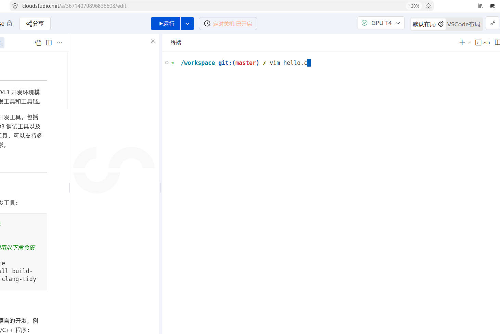
用命令行包括vim编写和调试代码比较麻烦，我们希望能够ssh上去，并且用 VS Code进行远程开发调试(参考下文)。
很多云的环境是基于虚拟机的，而且会提供一个外网IP地址，那么有了这个外网IP地址，我们就可以ssh登陆进去了。如果你是使用这些环境，那么就直接跳过本节内容。
但是CloudStudio是提供一个Docker环境，而且不提供外网地址，我们需要通过hack的方式实现ssh远程登陆。
2.4.1 创建用户并设置sudo权限¶
由于Linux系统一般禁止root远程ssh，我们创建一个普通的账号，并给他sudo权限：
sudo adduser lili
sudo usermod -aG sudo lili
然后切换到这个账号：
su - lili
注意：下面的命令都是在lili这个账号下执行。以后每次启动CloudStudio后请用su - lili切换到非root账号操作命令。
2.4.2 安装sshserver¶
sudo apt update
sudo apt install -y openssh-server
启动sshd服务：
sudo service ssh start
注意：因为CloudStudio是基于Docker环境的，每次重启CloudStudio的环境后我们都得手动执行sudo service ssh start。如果是你自己安装的系统，可以用如下命令：
sudo systemctl enable ssh
sudo service ssh start
上面的命令行只需要执行一次，系统重启后会自动开启sshd服务。
验证可以本地ssh：
su - lili
ssh lili@localhost
如果一切正常，那么输入密码后就可以ssh登陆。
我们现在的sshd服务已经启动，并且本地验证也可以ssh上去。但现在的问题是CloudStudio的服务器没有提供外网IP地址，我们无法直接远程ssh上去。为了解决这个问题，下面提供两种方法。
2.5 通过cpolar的端口转发实现ssh登陆¶
2.5.1 原理¶
通过 cpolar 实现远程 SSH 登录的核心原理是内网穿透（NAT Traversal）与 反向隧道（Reverse Tunneling）技术。
整个通信链路可以分为以下四个步骤：
+------------------+ 步骤 1: 建立长连接隧道 +------------------+
| CloudStudio(SSHD)| ==========================> | cpolar 公网服务器 |
| (cpolar client) | | (公网IP + TCP端口)|
+------------------+ +------------------+
|| ^
|| 步骤 3: 本地转发 || 步骤 2: SSH 请求
\/ ||
+--------------+ +------------------+
| 本地 22 端口 | | 外网客户端电脑 |
+--------------+ +------------------+
-
建立反向连接（隧道建立）：
- 在内网机器上(CloudStudio服务器)启动
cpolar服务端/客户端。 - cpolar 客户端主动向 cpolar 的公网中转服务器发起出站 TCP 连接。由于大部分防火墙限制“入站”流量但放行“出站”流量，该出站连接能够顺利穿透本地路由器和 NAT。
- 双方建立一条持久化的双向通信隧道（Tunnel）。
- 在内网机器上(CloudStudio服务器)启动
-
公网端口映射（端口绑定）：
- cpolar 中转服务器在公网服务器上为你随机分配一个公开的 TCP 域名和端口（例如
1.tcp.cpolar.cn:12345）。 - 此时，这个公网端口就成了内网 SSH 服务（默认
127.0.0.1:22）在互联网上的代理入口。
- cpolar 中转服务器在公网服务器上为你随机分配一个公开的 TCP 域名和端口（例如
-
流量转发与解包（数据传输）：
- 当你用外网电脑执行命令
ssh user@1.tcp.cpolar.cn -p 12345时，请求首先到达 cpolar 公网服务器的12345端口。 - cpolar 公网服务器将接收到的加密 SSH 数据包封装进此前建立好的“反向隧道”中，顺着隧道透传给内网的 cpolar 客户端。
- 内网 cpolar 客户端接收到数据后，将其转发给本地主机的 22 端口（
SSHD服务）。
- 当你用外网电脑执行命令
-
响应原路返回：
- 本地 SSHD 处理请求并将响应数据交给 cpolar 客户端。
- 客户端经由隧道发回公网服务器，再由公网服务器返回给你的外网电脑，从而完成一次完整的 SSH 握手与交互。
2.5.2 优点和缺点¶
使用 cpolar 等第三方 SaaS 穿透工具 转发 SSH 端口，是一种非常典型的“轻量、开箱即用”远程连接方案。它的主要优缺点对比如下：
2.5.2.1 核心优点¶
-
部署极其零门槛（不用买云服务器与公网 IP）
- 免公网 IP / 免路由器配置：不需要向运营商申请公网 IP，也不需要在路由器上设置端口映射（Port Forwarding）或 DMZ 虚拟主机，即使在校园网、公司局域网或大内网环境下也能直接穿透。
- 零运维成本：无需自己购买、部署和维护公网 VPS（云服务器），省去了配置 Nginx、frp 或安全组的麻烦。
-
开箱即用，上手极快
- 安装 cpolar 客户端后，几乎只需一条命令（如
cpolar tcp 22）就能立刻拿到一个可用的公网 TCP 地址和端口。
- 安装 cpolar 客户端后，几乎只需一条命令（如
-
安全性较传统端口映射更高
- 隐藏真实 IP：外网连接的是 cpolar 的中转服务器 IP，你的内网真实 IP 和网络拓扑不会暴露在公网上。
- 端到端加密防护：cpolar 只在中转层做流量透传，SSH 本身的认证（密码/私钥）和数据加密是在你本地机器和远程终端之间直接完成的，第三方服务器无法解密通信内容。
-
出站连接兼容性好
- 采用内网向外发起 TCP 长连接（Outbound Connection）的方式，能轻松绕过绝大多数防火墙对“入站（Inbound）”流量的拦截。
2.5.2.2 核心缺点与局限¶
-
免费版的限制（体验受限）
- 随机端口与地址变动：免费版分配的公网 TCP 端口通常是 动态随机 的，每隔 24 小时或客户端重启后就会发生变化，每次连接都需要重新查看并输入新端口，无法做到一次配置长期保存。
- 带宽和并发限制：免费版的传输速率一般限制在 1~2 Mbps 左右，如果只是纯 Terminal 敲命令影响不大，但如果需要通过
scp/rsync传输大文件，或者挂载 VS Code Remote-SSH 进行大量代码 indexing，体验会明显卡顿。
-
网络延迟与服务可用性强依赖第三方
- 额外延迟（绕路）：数据流量需要先发送到 cpolar 的中转服务器，再透传回本地。如果 cpolar 的服务器节点距离你较远或负载较高，打字时会有明显的输入延迟（Lag）。
- 单点故障风险：如果 cpolar 官方服务器宕机、网络波动或服务调整，你的 SSH 远程连接就会中断。
-
潜在的安全隐患与合规风险
- 暴露于公网扫描：一旦映射到公网，cpolar 分配的端口会暴露给全球的自动化 SSH 爆破脚本。如果本地 SSH 使用了弱密码，极易被黑客暴破侵入（强烈建议禁用密码登录，仅使用 SSH 密钥认证）。
- 企业/校园网合规审查：在公司或学校内部私自开启穿透工具，可能违反组织的安全审计合规政策（Shadow IT 风险）。
2.5.3 使用方法¶
去cpolar官网注册一个账号，免费的就够用了。然后获取到token，这个token千万不能公开。
2.5.3.1. 安装客户端程序¶
curl -L https://www.cpolar.com/static/downloads/install-release-cpolar.sh | sudo bash
2.5.3.2. token认证¶
cpolar authtoken xxxxxxx
这个命令在一台机器上只需要执行一次。
2.5.3.3. 开启隧道¶
cpolar tcp 22
Forwarding tcp://15.tcp.cpolar.top:13736 -> tcp://127.0.0.1:22
下面出现了tcp://15.tcp.cpolar.top:13736 -> tcp://127.0.0.1:22，说明把15.tcp.cpolar.top:13736映射到127.0.0.1:22。这个时候就可以直接在任何能上网的地方就可以ssh：
ssh lili@15.tcp.cpolar.top -p 13736
注意： 免费的账号域名和端口每次连接都会变化。而且网络不稳的话经常会断掉。如果你想自动重连的话，可以写一个脚本检测cpolar进程，然后使用crontab让这个脚本定期运行。
2.5.3.4 windows的ssh客户端公钥免密登陆(可选，但强烈建议设置)¶
新版的powershell自带ssh客户端，我们可以直接使用。如果是非常老的windows10可能没有，那么可以安装putty等其它ssh客户端。不过我不建议使用图形界面的工具，因为用起来不方便(纯粹个人观点)。
ssh lili@15.tcp.cpolar.top -p 13736
然后输入密码就可以登陆。但是每次登陆都要输入密码太费劲，我们可以利用SSH密钥对实现“免密登录”。它的基本原理就是非对称加密，对其原理感兴趣的同学可以自行网络搜索。我这里只介绍怎么操作。
PS> ssh-keygen -t rsa -b 4096
C:\Users\lili\.ssh下会生成两个文件：id_rsa和id_rsa.pub。id_rsa是私钥，永远不要给任何人看。然后id_rsa.pub是公钥，我们需要复制它的内容(给任何人看到都没有关系)。
PS C:\Users\lili\.ssh> cat .\id_rsa.pub
ssh-rsa AAAAB3NzaC1yc2EAAAADAQABAAACAQCx3uPyr/0QtkSdc+h5WTxfNp3C5twlDXN8G9/KGUL7JbmeGutq9CMhqcgWyONyIARKMb5kel23Vcwsvn2h1lLdJ+mzHfhEXpS9mxKec1f9BDSFx9f646Gshor4T2FVJu3tXGxnKWKWbgkbD+IpW24gUjv8LqGgYrwcGVteJytBZGDAvMXu4rPJTKBaxMgILSp19kw3kMrQdrhdibPXuQ8n8G/vXH9S51t+RuADnUkOig0uCJepV7GKOif0QET24iN8Nr46uy8HoA94TXIaFtINswiNEVxF9Z/BHA41xitBIbS8ibMm15e+Tur3TL1gvCqeOr1vVqIr204E+e8Ub2dKCkELhi/kfHrZm5sY39tYhtgBldMLQbCjqZq3GBZQiyYhE7X++Jnvk3dRcWd+VsQXfbkimzFmWs3t9SMxXPoukIjFI1ZXz0yDeNeA6Yv96MY05KrpTe/EVpnVqNvGX0GH6/brqrfGqCTBNeZbuWBYFWEPPkoPE0pJxJcYnWFZYhYaTldJZDeroOxjAdRSlGuxQFFv5tVzZAahu3D9TkmyM/Tv5Cn0SjH6cn7pLAhYLJbx3E9vRM8hSNG44ufcNQLQzSNwbIYl8QK/Ow34yKqBKmTjOBx1FAeJLgu2CPlNMPnoWz8FNyMJZUlJ08ndr0re0u2jhLxFDHiHWBadX7HoSw== lili@itcast
上面是我的公钥，你需要复制自己的。
开启ssh-agent
在 Powershell 下执行：
Get-Service ssh-agent | Set-Service -StartupType Automatic
Start-Service ssh-agent
ssh-add $env:USERPROFILE\.ssh\id_rsa
把公钥复制到Ubuntu
登陆到Ubuntu：
ssh lili@15.tcp.cpolar.top -p 13736
然后用vim编辑：
vi ~/.ssh/authorized_keys
把你的公钥复制到这个文件里。
现在再测试一下。在 Powershell 下执行：
ssh lili@15.tcp.cpolar.top -p 13736
如果一切正常，不需要输入密码就直接登陆Ubuntu。
2.5.3.5 ssh客户端配置(可选，但强烈建议设置)¶
如果windows的用户名和Ubuntu不同，每次都得输入，很费劲，另外每次输入那么长的域名，也容易出错。我们需要在C:\Users\lili\.ssh下创建一个名字叫config的文件，然后输入：
Host myserver
HostName 15.tcp.cpolar.top
User lili
Port 13736
这样我们在ssh myserver的时候它就会连接15.tcp.cpolar.top的13736端口，并且以lili为默认用户名登陆，它等价于：
ssh lili@15.tcp.cpolar.top -p 13736
注意： 每次重启CloudStudio后需要重新执行cpolar tcp 22，这会得到不同的域名和端口，那我们就需要重新修改config文件。
2.6 通过 websocat 实现 SSH 登录¶
CloudStudio 等云端开发环境（Cloud IDE）出于安全和网络隔离考量，通常 不提供独立的公网 IP，且防火墙会封锁外网对 22 端口（SSH）的直连请求。但平台通常会在 Web 端提供“端口管理”功能——允许用户将容器内监听的 HTTP/WebSocket 服务映射导出为一个带 HTTPS/WSS 加密的公网域名（如 [xxxxxxxxxx--3000.ap-shanghai2.cloudstudio.club](xxxxxxxxxx--3000.ap-shanghai2.cloudstudio.club)）。
借助 websocat，我们可以将 SSH 流量封装进 WebSocket 协议中，利用 CloudStudio 暴露的公网 Web 域名构建一条全双工加密隧道，从而实现本地终端无缝 SSH 登录云端开发环境。
2.6.1 工作原理¶
通过 websocat 实现 SSH-over-WebSocket 的原理可以划分为以下几个关键阶段：
[ 本地电脑 (SSH Client) ]
│ (1) stdin/stdout 二进制数据流
▼
[ 本地 websocat (Client) ]
│ (2) 封装为 WebSocket Binary Frame (WSS / 443 端口)
▼
[ CloudStudio 域名网关 / 反向代理 ] ── (通过平台端口映射放行)
│ (3) 转发 WSS 流量
▼
[ 容器内 websocat (Server) ] ── 监听 3000 端口
│ (4) 解包还原为原始 TCP 数据流
▼
[ 容器内 OpenSSH Server ] ── 监听 22 端口
-
利用 Web 域名穿透防火墙与 NAT：
- CloudStudio 的端口映射机制将容器内特定端口（如
3000）暴露为支持 HTTPS/WSS 的公网域名。由于 WSS（WebSocket Secure）运行在标准的 443 端口之上，其握手过程完全符合 HTTP/1.1 协议标准（带有Upgrade: websocket标头），因此能够被 CloudStudio 的网关和外网防火墙视作合规的 Web 流量顺畅放行。
- CloudStudio 的端口映射机制将容器内特定端口（如
-
二进制数据流封包与双向隧道建立：
- 服务端（容器内）：在 CloudStudio 内部启动一个
websocket的HTTPS服务，监听映射的3000端口，并将收到的 WebSocket 二进制数据帧解包后转发至本地的22端口（SSHD）。 - 客户端（本地电脑）：本地电脑运行
websocat，通过 WSS 协议连接 CloudStudio 提供的公网域名。建立连接后，websocat成为一个双向桥接管道。
- 服务端（容器内）：在 CloudStudio 内部启动一个
-
SSH 协议透传与安全保证：
- SSH 本身是基于 TCP 的二进制流协议。本地 SSH 客户端（如 OpenSSH、Termius）发出的加密握手与命令数据，经由本地
websocat封装成 WebSocket 数据帧发送；远端websocat收到后再解包还原为原始 TCP 流喂给 SSHD 服务。 - 端到端双重加密：传输层由 WSS（TLS/SSL）提供加密，应用层由 SSH 自身的非对称密钥/密码认证提供安全防护，网关节点无法查看或篡改实际传输的终端指令。
- SSH 本身是基于 TCP 的二进制流协议。本地 SSH 客户端（如 OpenSSH、Termius）发出的加密握手与命令数据，经由本地
2.6.2 优缺点¶
2.6.2.1 核心优点¶
-
强穿透力（完美绕过防火墙与网关限制）
- 许多严格的企业网、校园网或云平台会封锁
22端口（SSH）的出站/入站流量，但绝不会封锁80（HTTP）或443（HTTPS）端口。 - 建立连接时的 WebSocket 握手本质上是标准的 HTTP 请求（带有
Upgrade: websocket标头），防病毒网关和防火墙只会将其判定为合规的 Web 加密流量并予以放行。
- 许多严格的企业网、校园网或云平台会封锁
-
零公网 IP 与免自建穿透服务器
- 完全不需要向运营商申请公网 IP，也不需要购买外部云服务器（VPS）搭建
frp或ngrok中转。 - 直接复用 CloudStudio 等云端平台自带的“端口映射/Web 服务导出”功能，即用即建，省成本且极其方便。
- 完全不需要向运营商申请公网 IP，也不需要购买外部云服务器（VPS）搭建
-
双重加密保障（高安全性）
- 传输层安全：使用
wss://协议，数据外层被 TLS/SSL 加密，防止中间人窃听与伪造。 - 应用层安全：WebSocket 内部透传的是原生 SSH 加密流，云平台网关或中转服务只负责转发二进制数据包，无法解密你传输的实际指令与密钥信息。
- 传输层安全：使用
-
极低部署成本，支持一键配置
- 客户端与服务端均只需一个轻量级单文件工具
websocat，无需安装庞大的运行时。 - 结合 OpenSSH 的
ProxyCommand参数，可以在本地~/.ssh/config中配置为透明代理，后续使用时依然是执行普通的ssh cloudstudio即可直连。
- 客户端与服务端均只需一个轻量级单文件工具
2.6.2.2 核心缺点与局限性¶
-
环境依赖强，存在“生命周期限制”
- 域名/端口易变动：CloudStudio 或很多 Cloud IDE 的临时映射域名往往在环境重启、休眠或超时后会发生改变，每次可能需要重新配置 URL。
- 后置依赖 SSHD 与 websocat 进程：每次重新进入云端环境时，必须确保容器内的
sshd服务和websocat监听进程已经后台启动。
-
增加了网络延迟与性能开销
- 双层封包损耗：数据链路为
SSH 报文\rightarrowWebSocket 帧\rightarrowTLS 加密\rightarrowTCP，封包和解包过程会产生微小的 CPU 开销和额外的协议头体积（Overhead）。 - 网页网关转发延迟：流量需要经过 CloudStudio 的 Web 统一网关反向代理，相比原生 TCP 直连，终端敲命令时可能会感到轻微的输入延迟（Lag）。
- 双层封包损耗：数据链路为
-
断线重连机制较弱
- 某些云厂商的 Web 网关可能会对长连接设置 HTTP 连接超时（超时未活动自动断开）。如果长时间不敲终端，WebSocket 连接可能会被网关强行切断（建议在本地 SSH 配置中开启
ServerAliveInterval 60发送心跳包）。
- 某些云厂商的 Web 网关可能会对长连接设置 HTTP 连接超时（超时未活动自动断开）。如果长时间不敲终端，WebSocket 连接可能会被网关强行切断（建议在本地 SSH 配置中开启
2.6.3 使用方法¶
2.6.3.1 CloudStudio服务器端¶
首先我们还是确认sshd服务已经启动，可以通过下面的命令在服务器上ssh自己来验证：
ssh lili@localhost
如果登陆不上，可能是sshd没有正常启动，需要启动：
sudo service ssh start
然后我们需要启动一个websocket转发tcp 22的服务程序，这里我们自己用Python写一个。因为还需要安装aiohttp这个包，所以我把它做成了一个项目，并且用uv来管理。不熟悉Python的同学也不要担心，代码我都写好了，复制粘贴即可。
1. 安装uv¶
如果服务器上已经安装了，可以跳过。我们可以执行uv，如果找不到，就用下面的命令安装：
curl -LsSf https://astral.sh/uv/install.sh | sh
source $HOME/.local/bin/env
安装后执行uv测试一下，确保安装成功。
2. 创建一个uv管理的python项目¶
mkdir bridge && cd bridge
uv init
uv add aiohttp
source .venv/bin/activate
3. 创建http_ssh_bridge.py¶
cat > http_ssh_bridge.py << 'EOF'
import asyncio
from aiohttp import web
class SSHBridge:
def __init__(self):
self.clients = set()
async def handle_http(self, request):
# 兼容 CloudStudio 的健康检查或浏览器直接访问
# 如果不是 WebSocket 升级请求，返回一个友好的状态页面
if request.headers.get('Upgrade', '').lower() != 'websocket':
return web.Response(text="CloudStudio SSH Bridge is running.", status=200)
# 如果是 WebSocket 请求，进行隧道升级
ws = web.WebSocketResponse()
await ws.prepare(request)
# 连接本地的 SSH (22端口)
try:
reader, writer = await asyncio.open_connection('127.0.0.1', 22)
except Exception as e:
await ws.close()
return ws
async def ws_to_tcp():
try:
async for msg in ws:
if msg.type == web.WSMsgType.BINARY:
writer.write(msg.data)
await writer.drain()
elif msg.type == web.WSMsgType.TEXT:
writer.write(msg.data.encode('utf-8'))
await writer.drain()
except Exception:
pass
finally:
writer.close()
async def tcp_to_ws():
try:
while True:
data = await reader.read(4096)
if not data:
break
await ws.send_bytes(data)
except Exception:
pass
finally:
if not ws.closed:
await ws.close()
# 双向转发
done, pending = await asyncio.wait(
[asyncio.create_task(ws_to_tcp()), asyncio.create_task(tcp_to_ws())],
return_when=asyncio.FIRST_COMPLETED,
)
for task in pending:
task.cancel()
return ws
app = web.Application()
bridge = SSHBridge()
app.router.add_get('/', bridge.handle_http)
if __name__ == '__main__':
# 必须安装 aiohttp: pip install aiohttp
web.run_app(app, host='0.0.0.0', port=3000)
EOF
4. 启动python程序¶
source .venv/bin/activate
python http_ssh_bridge.py
5. 查看CloudStudio端口管理的域名¶
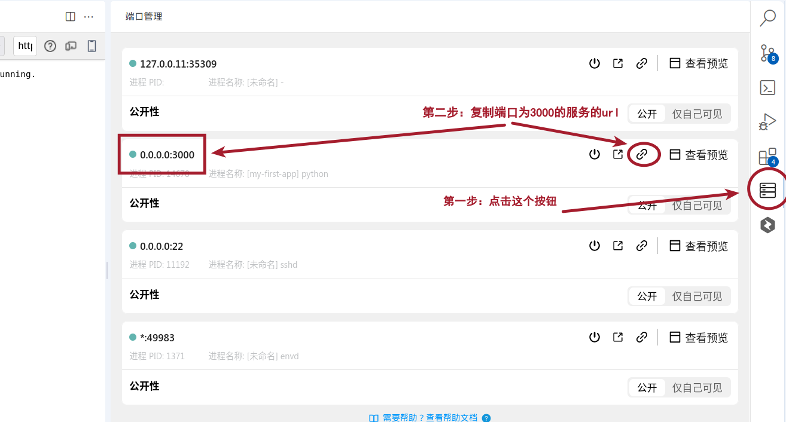
可以得到类似 https://6d1ca7c886604a4aa39a89e9116c2d6f--3000.ap-shanghai2.cloudstudio.club的域名。
我们可以用浏览器打开，它会返回： CloudStudio SSH Bridge is running.。这说明服务器设置正常。
2.6.3.2 客户端设置¶
去websocat Release下载，根据你的系统选择合适的版本。比如Windows(x64)可以选择websocat.x86_64-pc-windows-gnu.exe。
我们假设下载放到C:/Users/lili/Downloads/websocat.x86_64-pc-windows-gnu.exe。
然后修改C:\Users\lili\.ssh\config文件，增加：
Host cloudstudio
HostName 6d1ca7c886604a4aa39a89e9116c2d6f--3000.ap-shanghai2.cloudstudio.club
Port 443
User lili
ProxyCommand "C:/Users/lili/Downloads/websocat.x86_64-pc-windows-gnu.exe" --binary wss://%h/
然后在Powershell下执行：
ssh cloudstudio
如果想公钥免密登陆，可以参考前面的内容，把公钥复制到服务器的~/.ssh/authorized_keys下。
3. VSCode远程开发和调试Python和C++/CUDA程序¶
3.1. 安装¶
去官网下载安装。
3.2. 下载插件¶
因为我们希望的远程开发，也就是说，代码放在远程服务器上，程序也运行在服务器上，但是编辑代码和调试程序的客户端(GUI)是在本地。因此我们需要安装remote-ssh插件。
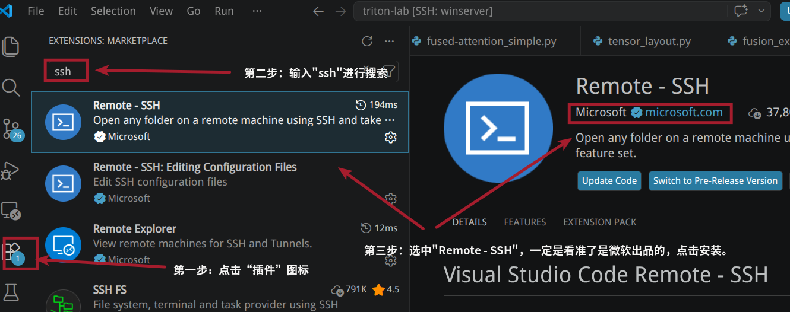
对于Python开发来说，要下载的插件是python，这也是微软官方出品的插件。
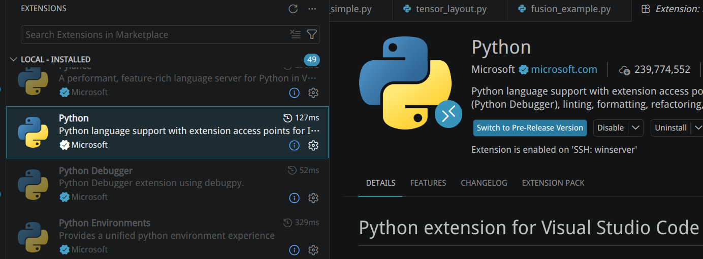
对于C++开发来说，需要下载插件C++，也是微软官方出品。另外，我们需要调试CUDA程序，还需要安装``，这个是Nvidia官方出品。
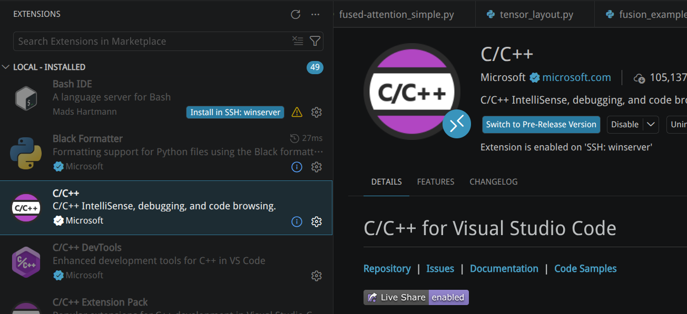
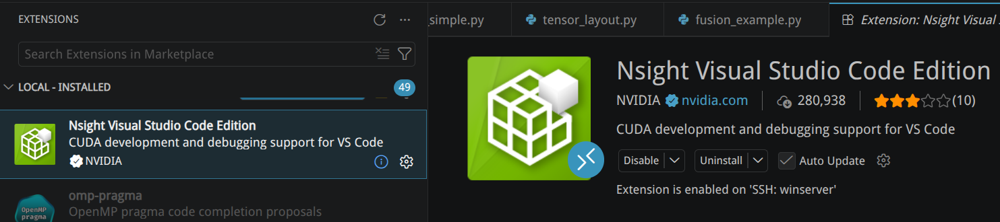
3.3. 远程连接Ubuntu¶
点击左下角的ssh连接，然后选择Connect to Host，输入myserver(或者你前面在.ssh/config里设置的服务器)。
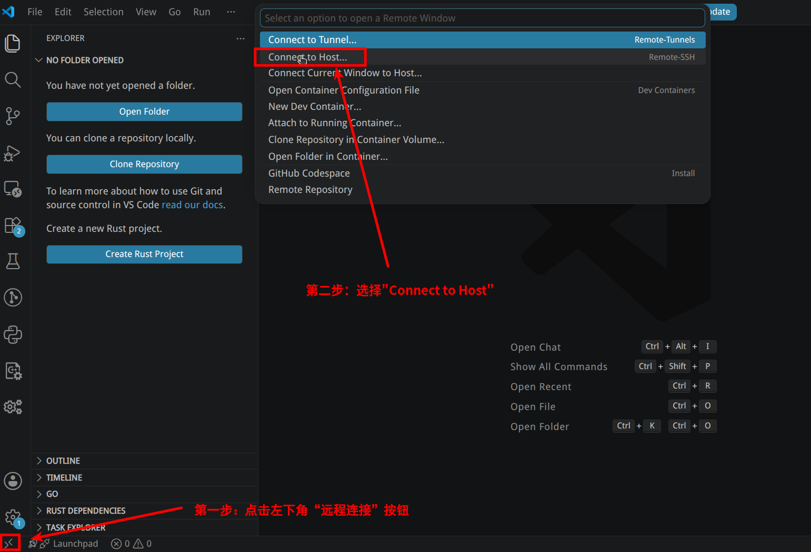
注意：第一次连接的时候，VSCode的一些插件(比如Python和C++等)需要在服务器上安装对应的插件，所以可能需要一些时间。它会在当前登陆用的家目录下安装这些插件。如果我们用相同的账号在不同的客户端用不同版本的VsCode连接同一台服务器，它就会在相同的账号的家目录安装不同版本的插件，可能会出问题。所以如果我们要在不同的机器(比如一个台式机一个笔记本电脑)登陆同一台服务器进行远程开发，建议用不同的账号登陆。如果只能用一个账号(比如在公司你只有一个账号)，那么建议用相同版本的VsCode和相同版本的插件。所有VScode相关的数据都在~/.vscode-server/目录下，如果有问题，可以删除这个目录。下次重连时会重新下载插件和相关的数据。
3.4. 打开项目目录¶
我们以triton-lab项目为例，这个项目放置的是第三章《Triton编程》的所有代码。我们首先在服务器上安装项目相关的依赖，因为用uv来管理，安装非常简单：
cd triton-lab
uv sync
source .venv/bin/activate
然后在VsCode选中这个项目所在的根目录，打开即可。
VsCode和其它很多IDE不同，它是非侵入式的，也就是它不会强制要求你的项目的目录结构。它只是一个(功能超级强大的)编辑器而已，与VsCode相关的所有文件都放置在项目目录之下的.vscode的子目录下。我们删除掉这个目录对项目不会产生任何影响(当然会影响VsCode)。
3.5. 设置python解释器¶
vscode里，选择.venv下的python解释器，这样就能自动补全代码。
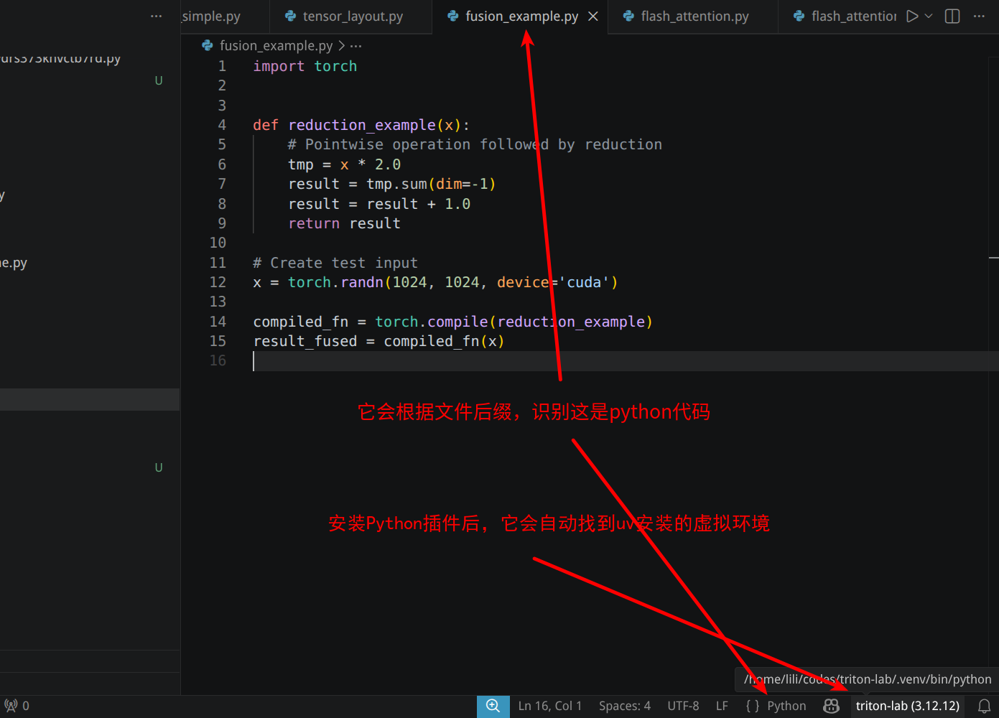
3.6. 远程调试Python代码¶
创建目录.vscode，然后创建文件launch.json，内容为：
{
// Use IntelliSense to learn about possible attributes.
// Hover to view descriptions of existing attributes.
// For more information, visit: https://go.microsoft.com/fwlink/?linkid=830387
"version": "0.2.0",
"configurations": [
{
"name": "Python Debugger: Remote Attach",
"type": "debugpy",
"request": "attach",
"connect": {
"host": "localhost",
"port": 5678
},
"justMyCode": false
},
{
"name": "Python Debugger: Current File",
"type": "debugpy",
"request": "launch",
"program": "${file}",
"console": "integratedTerminal",
"justMyCode": false
}
]
}
注意其中的justMyCode，如果为true，那么只能在我们自己的代码里加断点。如果是false，那么我们可以进入第三方库，比如Pytorch。
有两种调试方式。第一种是vscode启动并调试当前文件，第二种是远程attach。第一种最简单，但是有的时候我们必须用命令行启动，比如分布式的训练。第二种方法必须要安装debugpy(第一种也是使用debugpy，它作为插件已经集成到vscode里了)：
uv add debugpy
对于py-playground项目，我已经安装好了debugpy。
Python Debugger: Current File
对于第一种方法，我们之间用vscode打开要调试的文件，比如test_metric.py，然后在里面设置断点。最后点击调试按钮即可。
注意：vscode非常智能，如果我们是通过ssh打开的远程项目，它会通过ssh远程在服务器上启动python并且attach上去调试。
Python Debugger: Remote Attach
第二种方法需要我们手动在远程服务器上启动：
python -Xfrozen_modules=off -m debugpy --listen 0.0.0.0:5678 --wait-for-client test_metric.py
由于我们的启动参数里有--wait-for-client，远程的python调试进程会等待我们连接上才继续执行。如果我们不加这个参数，可能我们还没来得及连接程序就运行结束了。
接着我们用vscode的Python Debugger: Remote Attach连接上去，就可以调试了。
注意：我们这里的host地址是localhost，因为本地的windows可以通过localhost直接访问Ubuntu的5678端口。如果是其它机器通过windows访问Ubuntu，那么需要把windows的5678端口转发给Ubuntu的5678端口(同时需要开放防火墙，具体方法参考前面ssh的配置)，并且把host改成windows的ip。
3.7. 远程调试C++/CUDA程序¶
3.7.1 远程编辑¶
这个和Python是一样的，我们用remote ssh连接上远程服务器，并且打开相应的目录即可。比如我这里打开/home/lili/codes/flash-attn-cpp，这个是我们第二章《从零实现FlashAttention v1/v2》的项目代码。
3.7.2 编译¶
我们使用CMake来管理C++/CUDA项目，VsCode也有CMake的插件，但是不是特别好用，我们这里直接用命令行来编译。因为需要调试，我们编译一个Debug版本的。
mkdir build && cd build
cmake -DCMAKE_BUILD_TYPE=Debug ..
make
编译完成后就可以执行程序，比如：
lili@itcast:~/codes/flash-attn-cpp/build$ ./flash-attn_v1_debug
=== Reference Result (PyTorch Softmax Attention) ===
0.5641 1.2160
1.3374 1.3586
0.7967 1.2686
0.2775 1.3133
1.2033 1.2686
1.0000 1.3009
[ CUDAFloatType{6,2} ]
=== CUDA Kernel Result (FA-v1 Algo1) ===
0.5641 1.2160
1.3374 1.3586
0.7967 1.2686
0.2775 1.3133
1.2033 1.2686
1.0000 1.3009
[ CUDAFloatType{6,2} ]
[SUCCESS] 验证成功！FlashAttention-v1 Alg1 结果与 Torch 完全一致！
3.7.3 远程调试¶
打开或者创建.vscode下的launch.json文件，内容修改为：
{
"version": "0.2.0",
"configurations": [
{
"name": "CUDA C++: Launch",
"type": "cuda-gdb",
"request": "launch",
"program": "${workspaceFolder}/build/flash-attn_v1_debug"
},
]
}
注意：如果我们想调试其它程序，只需要修改program对应的路径即可。
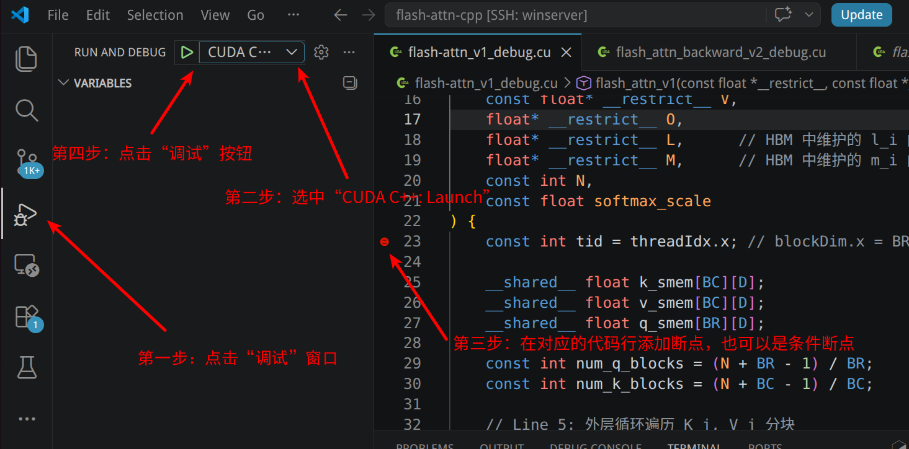
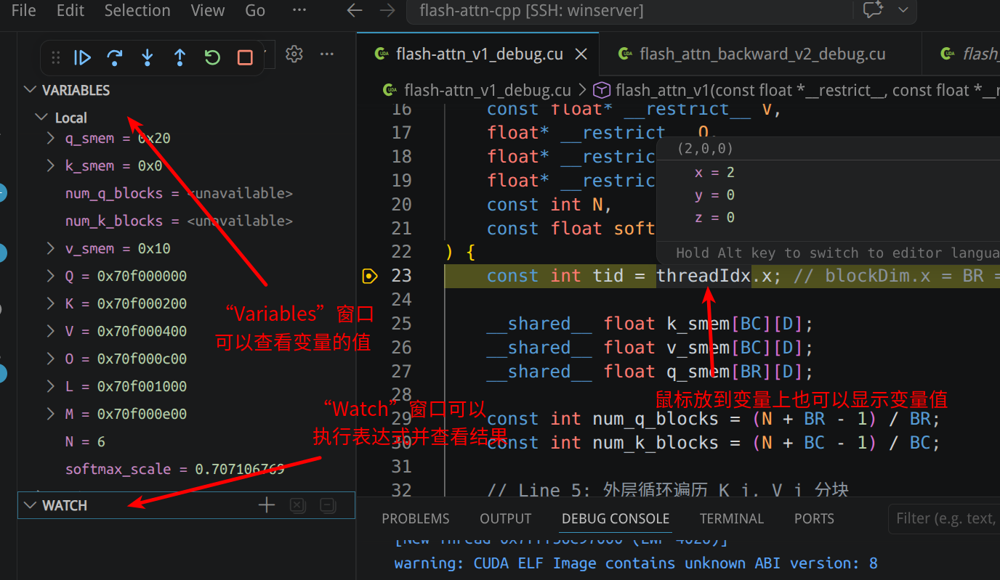
4. 用uv管理Python项目¶
4.1 uv的好处¶
我之前用过conda、pip、pipenv、venv、poetry和PDM来管理Python依赖包，但是各有各的问题，我觉得最好用的就是uv。
uv的好处很多，比如通常会提到的速度快。我这里讲一个我最喜欢的特性，那就是全局的包缓存共享。
经常做AI项目的同学都会有这样的痛点：几乎所有项目都会依赖Pytorch或者TensorFlow这样的深度学习库，但是它们非常大，通常好几GB。从项目管理的角度来说应该每个项目都安装独立的环境，那就意味着每个环境都得安装非常大的Pytorch。因为我们经常需要做实验尝试很多开源的项目，电脑上有几十个项目非常正常，因此光安装这些可能就用了上百GB的空间。
有的时候为了节省空间，就把好几个项目共用一个虚拟环境，这就会导致依赖管理的混乱。有了uv之后这些烦恼就全部没有了，而且如果某个版本的pytorch安装之后，第二次安装非常快，因为它只是创建了一个hardlink。
4.1.1 物理层面的“全局共享”¶
当你使用 uv 安装一个包（比如 Pytorch）时，它并不会直接把包下载到你的项目文件夹里，而是存放在一个 全局缓存目录（Global Cache）中：
- Linux/macOS:
~/.cache/uv - Windows:
%LOCALAPPDATA%\uv\cache
这意味着：
- 如果你在 10 个不同的项目里都用到了
Pytorch 2.8.0，uv在你的硬盘里 只存了一份 物理文件。 - 这样极大地节省了硬盘空间，并且让安装速度接近瞬时。
4.1.2. 项目层面的“严格隔离” (The Virtual Environment)¶
虽然物理文件是一份，但每个项目依然拥有自己独立的 虚拟环境（venv）。
uv 使用了现代文件系统的特性（如 Reflinks 或 Hardlinks）将全局缓存中的包“映射”到项目的 .venv 目录中：
- 隔离性：项目 A 用
Pytorch 2.8.0，项目 B 用Pytorch 2.5.0。uv会在缓存里存两个版本，并分别为两个项目指向对应的版本。它们互不干扰。 - 安全性：你修改了项目 A 里的包代码，不会影响项目 B。
4.1.3. 与 pip 的主要区别¶
| 特性 | 传统的 pip |
uv |
|---|---|---|
| 安装方式 | 每次安装都要重新下载/解压到 site-packages |
检查全局缓存，通过链接（Links）瞬间完成 |
| 磁盘占用 | 随着项目增加线性增长 | 相同版本的包只占用一次空间 |
| 速度 | 受限于网络和 IO | 极快（通常比 pip 快 10-100 倍） |
4.1.4. 常用管理命令¶
如果你想管理这个全局共享的“仓库”，可以参考以下命令：
- 查看缓存占用了多少空间：
uv cache size
- 清理不再需要的缓存：
uv cache prune
- 彻底删除所有缓存：
uv cache clean
4.1.5. reflinks vs hardlinks¶
在 Linux 环境下，uv 优先使用 reflinks（写时复制），如果文件系统不支持，则退而求其次使用 hardlinks（硬链接）。
1. 优先选择：Reflinks (Clone Files)¶
如果你的 Linux 文件系统是 Btrfs 或 XFS，uv 会优先创建 Reflinks。
- 原理：Reflink 是一种“指向数据的指针”。它看起来像一个独立的文件，占用独立的磁盘空间记录，但其实际的数据块（Data Blocks）在物理磁盘上是共享的。
- 优势（Copy-on-Write）：如果你在某个虚拟环境里意外修改了包的代码，Linux 会自动为该文件分配新的物理空间进行写入。这意味着你修改项目 A 的包，绝对不会弄坏项目 B 的包，也不会弄坏全局缓存。
2. 次优选择：Hardlinks (硬链接)¶
如果你的文件系统是传统的 ext4（这是大多数 Ubuntu/Debian 的默认选择），uv 会退而求其次使用 Hardlinks。
- 原理：硬链接让
.venv里的文件和~/.cache/uv里的文件指向同一个 inode。 - 风险与保护：硬链接的一个问题是，如果你以 root 或有权限的方式直接修改了
.venv里的文件，全局缓存里的文件也会被改变。 uv的对策：为了防止这种“全局污染”，uv会在安装时尝试将缓存中的文件设为 只读 ，从而降低误操作的风险。
4.1.6 为什么不直接用 Symbolic Links (软链接)？¶
有些工具（比如 pnpm）大量使用软链接，但 uv 很少这样做：
- 兼容性：很多 Python 工具和编译器在扫描目录时会“跟随”软链接，有时会导致路径解析混乱（比如找不到
__file__对应的真实路径）。 - 安全性：硬链接和 Reflink 让虚拟环境看起来更像一个真实的、包含完整文件的目录。
4.1.7 Ubuntu(ext4文件系统)的注意事项¶
因为我们是在WSL下安装Ubuntu，默认的文件系统是ext4。我们如果把项目安装在/home/xx下是没有问题的。但是如果你把项目安装到挂载的外部磁盘如/mnt/d，那么就无法创建hardlink，这就会退化到拷贝。所以建议把项目代码放到/home/xx下。
注意：如果windows的磁盘空间不够，你使用了外接u盘或者移动硬盘，然后挂载到wsl下，它的速度会非常慢。我之前就碰到过这样的坑，一个模型在/home/xx下加载几秒钟，放到/mnt/e/后需要几分钟。原因是挂载的文件系统需要经过wsl的api读写，而不是直接由ubuntu管理。所以建议把常用的模型放到/home/xx下，不常用的可以放到其它地方。
注意:如果是一些存档的大文件，比如模型的checkpoint，可以定期转储到windows的磁盘上。因为wsl里的ubuntu为了效率一次会申请很大的空间，而且你在ubuntu里删除文件后它也不会立刻把空间归还给windows。如果你在ubuntu里频繁的创建和删除大量文件，可能会导致它占用很大的磁盘空间(占着但没有使用)。你可能需要使用diskpart来回收空间，但这会需要关闭ubuntu。
4.2 安装¶
本课程的Python项目使用uv来管理，从而保证环境可以精确复现。uv的学习资料可以参考：
不需要多深入了解，学个5分钟就够用了。安装方法为：
curl -LsSf https://astral.sh/uv/install.sh | sh
如果网络有问题可以直接下载：
https://releases.astral.sh/github/uv/releases/download/0.11.5/uv-x86_64-unknown-linux-musl.tar.gz
mkdir -p ~/.local/bin/
mv uv-x86_64-unknown-linux-musl/* ~/.local/bin/
echo 'export PATH="$HOME/.local/bin:$PATH"' >> ~/.bashrc
source ~/.bashrc
uv默认使用pypi的源，为了加速，我们可以设置uv使用国内的镜像。
创建或修改~/.config/uv/uv.toml文件，用清华的源：
[[index]]
name = "tsinghua"
url = "https://pypi.tuna.tsinghua.edu.cn/simple"
default = true
或者用阿里云的源：
[[index]]
name = "aliyun"
url = "https://mirrors.aliyun.com/pypi/simple"
default = true
5. 使用CMake管理C++项目¶
5.1. CMake是什么，为什么需要它？¶
在现代 C++ 开发中，复杂的工具链往往让人眼花缭乱。要搞清楚 CMake 的价值，我们必须先看清整个 C++ 的生态全景图。
我们可以把 C++ 的编译和构建生态分为三个层级：干苦力的“工头”（编译器）、本地的“施工队”（构建工具），以及 总设计师（CMake）。
5.1.1. C++ 生态全景图：从 GCC 到 Visual Studio¶
在 C++ 世界里，我们编写的代码（.cpp, .cu 等文本文件）要变成计算机能运行的二进制程序，需要经历极其繁琐的步骤。这其中有几类核心角色：
5.1.1.1 🧱 编译器（Compiler）：最底层的干苦力者¶
编译器负责把 C++ 源代码翻译成机器能看懂的机器码。不同平台有不同的编译器：
- GCC / G++：Linux 世界的绝对统治者，开源、强大。
- Clang：基于 LLVM 的现代化编译器，报错信息极度友好，编译速度快，常用于 macOS（Xcode 底层）以及很多大型互联网公司的基建。
- MSVC (Microsoft Visual C++)：Windows 平台的御用编译器，由微软官方维护。
- NVCC：NVIDIA 专门为显卡算子准备的 GPU 编译器，它负责把核函数（Kernel）编译成 GPU 的 PTX 代码，同时调用底层的 G++ 或 MSVC 来处理主机的 CPU 代码。
5.1.1.2 📜 Makefile & 构建工具（Build Tools）：施工队的带头人¶
当项目超过 10 个文件时，手动敲命令（如 g++ main.cpp foo.cpp -o main）就成了灾难。如果只改动了一个文件，全量重新编译会浪费大量时间。
- Makefile 是一种脚本文件，它定义了文件之间的 依赖关系（比如
main.o依赖main.cpp和head.h）和 编译规则。 - Make（或者现代的 Ninja）是一个自动化构建工具。它会去读 Makefile，对比文件修改的时间戳，只编译被修改过的文件（增量编译），从而暴风式提升开发效率。
5.1.1.3 🏢 集成开发环境（IDE）：精装全包的样板房¶
- Visual Studio：Windows 上的“宇宙第一IDE”。它把编译器（MSVC）、构建系统（MSBuild）和图形界面、强悍的调试器全部打包在了一起。在 Windows 上点一下“绿色三角”，它在后台其实自动帮你完成了复杂的依赖分析、编译和链接。
5.1.2. 什么是 CMake？¶
既然有了编译器，也有了 Makefile 和 Visual Studio，为什么还要有一个 CMake？
💡 CMake 的本质：它不是编译器，也不是构建工具，它是“生成构建图纸的工具”（Meta-Build System）。
CMake 不负责把你的代码变成二进制，它负责 自动生成 Makefile 或者 Visual Studio 的工程文件（.sln）。
┌─── Linux / WSL ───> 自动生成 Makefile ───> 执行 make 编译
│
【编写 CMakeLists.txt】 ───> ┌─── Windows ───> 自动生成 VS Solution ───> 打开 VS 编译
│
└─── 追求极致速度 ───> 自动生成 Ninja 脚本 ───> 执行 ninja 编译
你只需要写一份全平台通用的配置文件（CMakeLists.txt），CMake 就会根据当前运行的系统，“入乡随俗”地翻译成当前系统最擅长的底层工具。
5.1.3. 为什么要用 CMake？（核心痛点）¶
在现代 C++ 和 AI 基础设施开发中，CMake 几乎是无可替代的绝对标准，主要因为它解决了以下三大痛点：
5.1.3.1 🔴 解决跨平台的“人间地狱”¶
如果没有 CMake，你的项目要想同时在 Windows 和 Linux 上跑，你必须手动维护两套东西：一套 Linux 上的 Makefile，和一套 Windows 上的 Visual Studio.vcxproj工程文件。任何时候增加一个源文件，你都要在两边分别手动添加一遍，极易出错。
- 有了 CMake：一份
CMakeLists.txt走天下，在 Linux 上一敲生成 Makefile，在 Windows 上一敲生成 VS 工程。
5.1.3.2 🔴 统一异构编译与 CUDA “一等公民”支持¶
在写 CUDA 算子时，项目里既有 CPU 跑的 .cpp，又有 GPU 跑的 .cu。手动组织 g++ 和 nvcc 的混合编译、处理复杂的动态链接库（.so / .dll）极其痛苦。
- 现代 CMake：原生支持 CUDA。只需要声明
enable_language(CUDA)，CMake 就能完美调度 CPU 和 GPU 编译器，自动处理好所有的头文件包含路径、库搜索路径以及不同 GPU 架构（如sm_80,sm_90）的编译选项。
5.1.3.3 🔴 完美的现代 IDE 生态地基¶
现代主流的 IDE（如 VS Code、CLion、Visual Studio 2022）都原生支持 CMake。当你在 VS Code 里安装了 CMake Tools 插件，IDE 就能通过读 CMakeLists.txt 瞬间看懂你的项目结构，从而提供精准的符号跳转、自动补全。
最重要的是，后面诸如 NVIDIA Nsight 等底层硬件级调试工具，几乎全部依赖 CMake 产生的编译符号靶点（Target Properties）来进行精准的源码行号映射。
5.2 CMake教程¶
请同学们自行上网搜索相关资料学习，这里给一些参考资料：